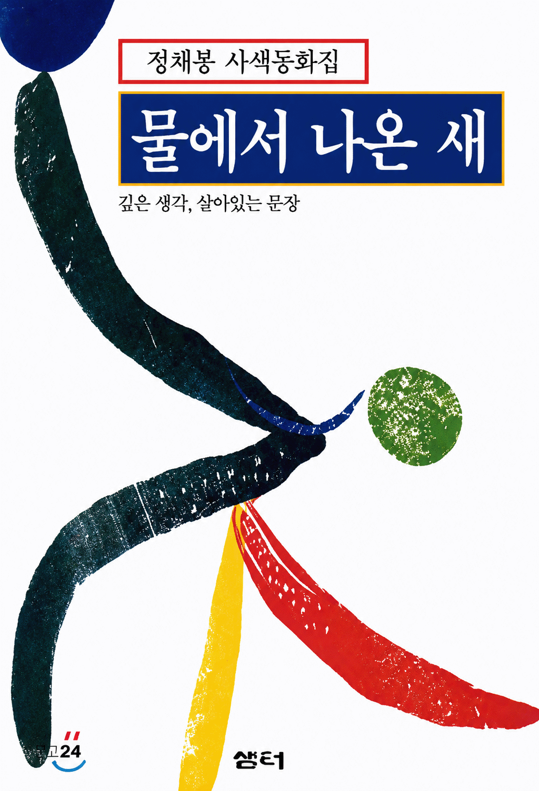
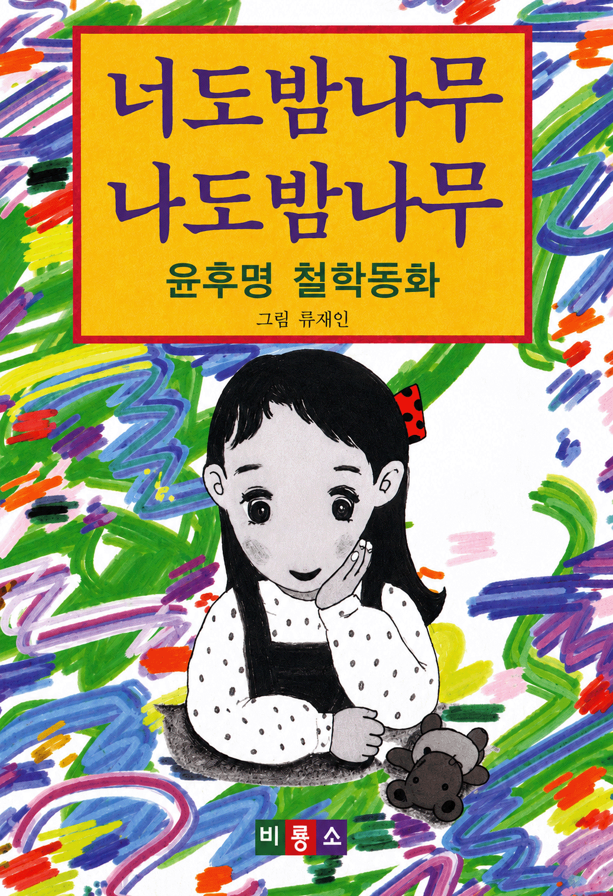
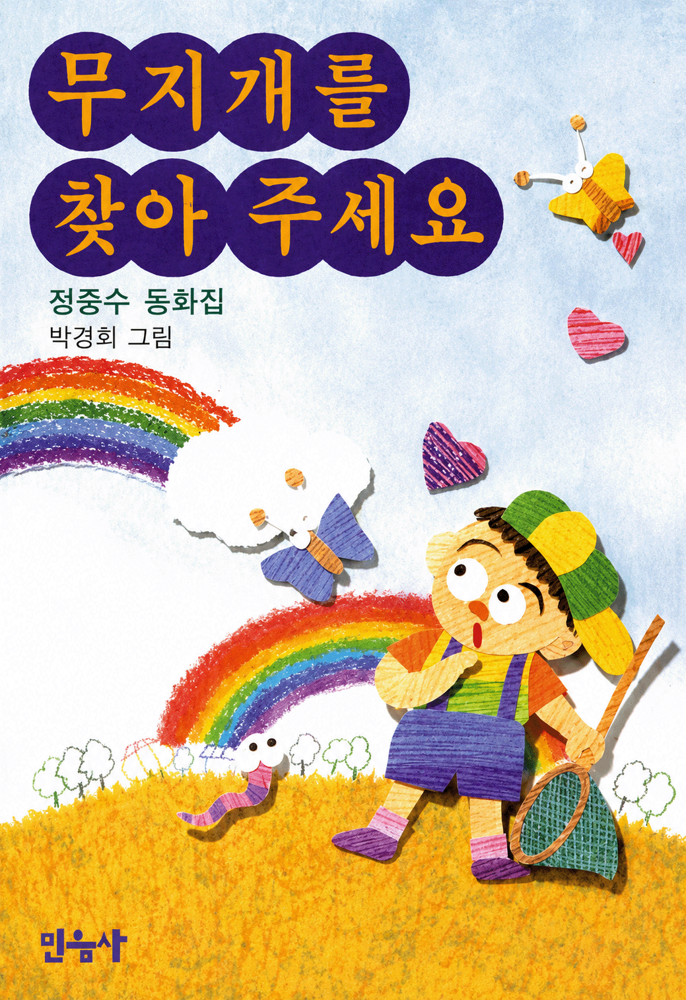
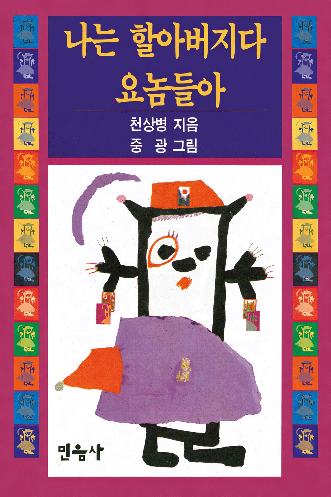
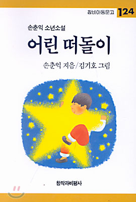
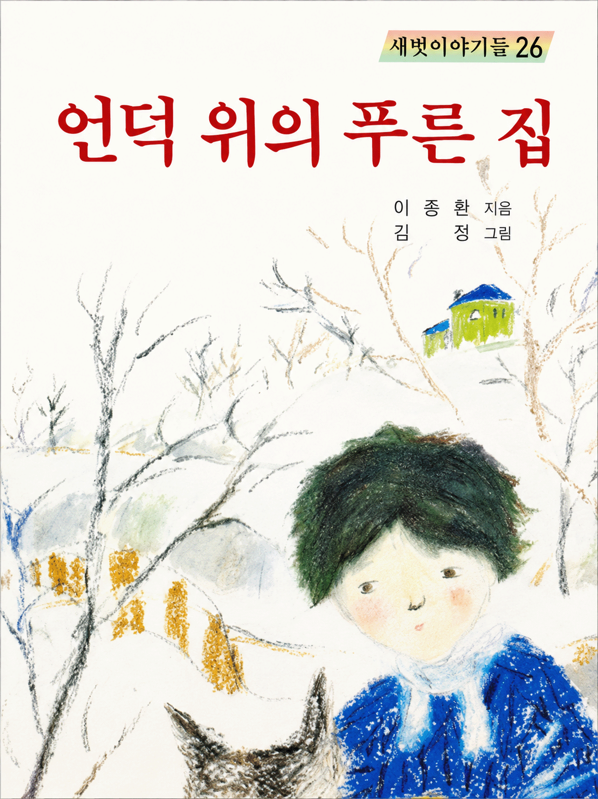
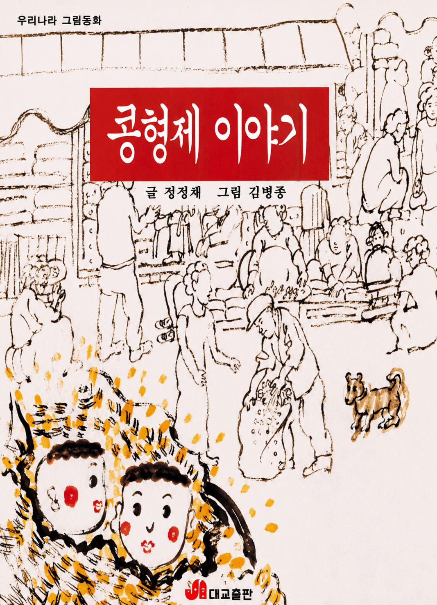
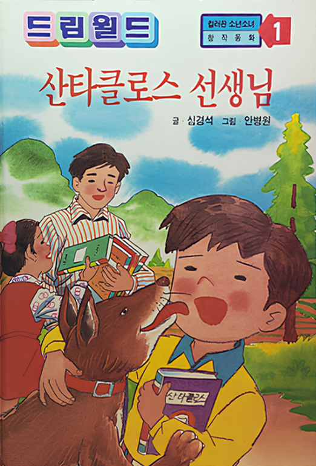
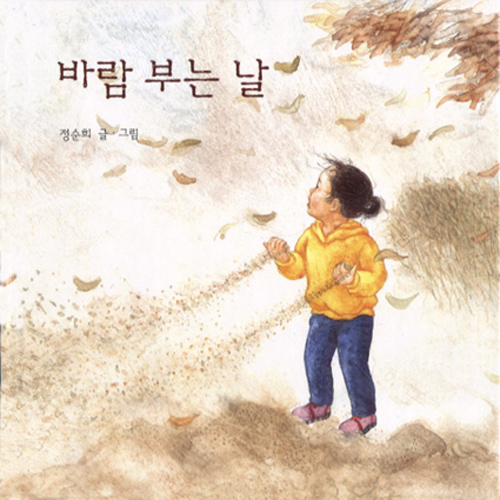

글 정채봉
출판사 : 샘터사
출간일 : 1993년 12월 1일
사진 출처 : 예스24_물에서 나온 새

글 윤후명 / 그림 류재인
출판사 : 비룡소
출간일 : 1992년 5월 29일
사진 출처 : 비룡소_너도밤나무 나도밤나무

글 정중수 / 그림 박경희
출판사 : 민음사
출간일 : 1992년 5월 29일
사진 출처 : 비룡소_무지개를 찾아주세요

글 천상병 / 그림 중광
출판사 : 민음사
출간일 : 1992년 12월 15일
사진 출처 : 비룡소_나는 할아버지다 요놈들

글 손춘익 / 그림 김기호
출판사 : 창비
출간일 : 1991년 12월 20일
사진 출처 : 교보문고_어린떠돌이(창아동문고 124)

글 이종환 / 그림 김정
출판사 : 새벗출판사
출간일 : 1990년 1월 1일
사진 출처 : 세이북_새벗이야기들 26) 언덕 위의 푸른집-이종환 지음/김 정 그림

글 정채봉 / 그림 김병종
출판사 : 대교출판
출간일 : 1999년 2월 28일
사진 출처 : 예스24_콩형제 이야기

글 심경석 / 그림 안병원
출판사 : 성문출판사
출간일 : 1994년 1월 1일
사진 출처 : 세이북_성문사) 컬러판 소년소녀 창작동화1) 산타클로스 선생

글,그림 정순희
출판사 : 비룡소
출간일 : 1996년 4월 20일
사진 출처 : 비룡소_바람 부는 날